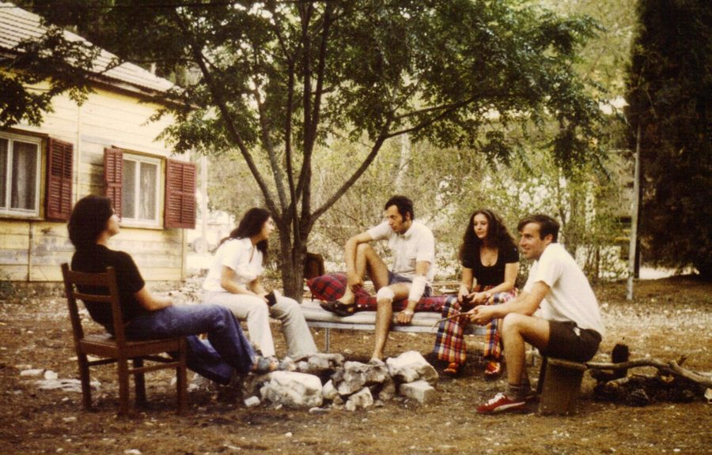
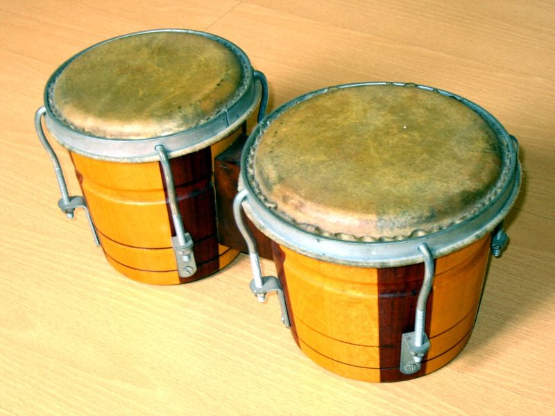
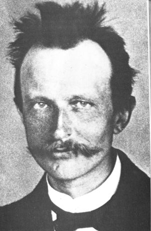
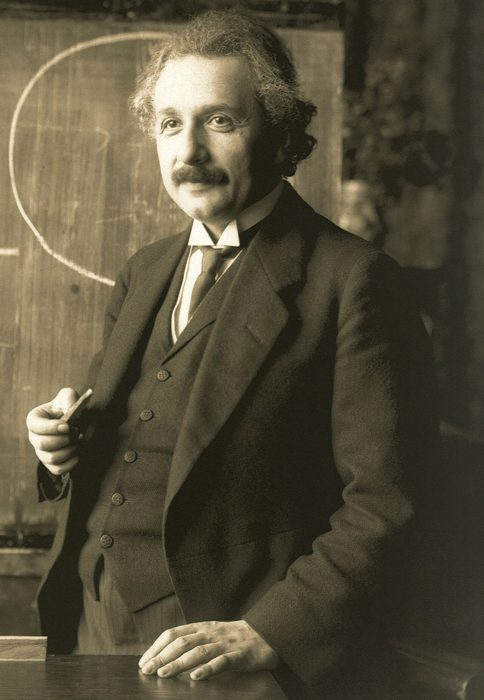
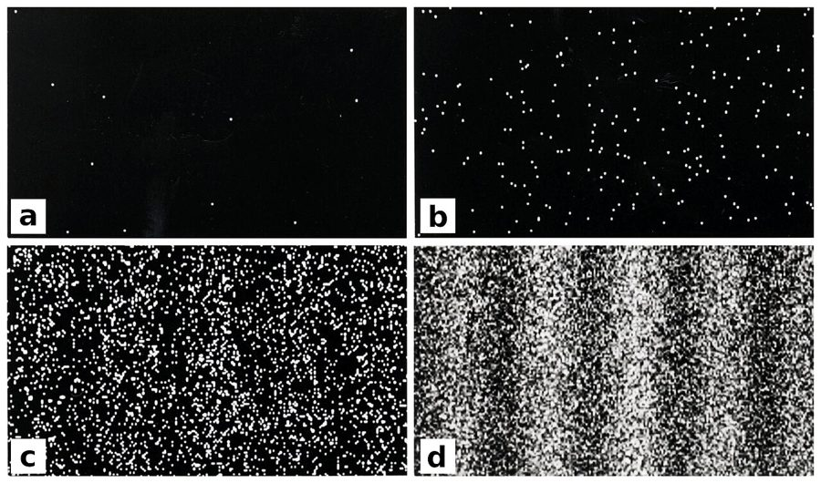
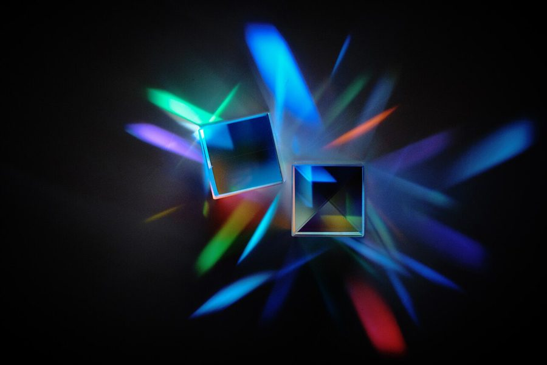

这一章在做什么
倒叙。上一章停在 1981 年，这一章退回 1973 年冬天：20 岁的作者在以色列的集体农庄干活，晚上没事做，翻到费曼的书，从此改学物理。
第 5 到第 9 段插了一段量子理论的小科普，生词最密，建议先看本页的物理一节再读。首尾讲故事的部分不难。
背景：作者默认你知道的事
基布兹（kibbutz）

1973 年 7 月，一个基布兹里的奥地利志愿者。作者几个月后以同样的身份去了另一个基布兹。
照片：Robert Schediwy，CC BY-SA 3.0，维基共享资源
以色列的集体农庄：土地和财产归集体，成员一起干活，在公共食堂吃饭，不领工资。成员叫 kibbutznik。
六七十年代有大批欧美年轻人去当志愿者，农庄管吃住，他们下地、喂牲口、进厨房。作者就是其中一个。
赎罪日战争（Yom Kippur War）
1973 年 10 月，以色列军队在苏伊士运河上架起浮桥。
照片：以色列军方刊物 Bamahane 摄影师，CC BY-SA 3.0，维基共享资源
1973 年 10 月 6 日，埃及和叙利亚同时进攻以色列。那天是赎罪日（Yom Kippur），犹太教一年里最神圣的日子，全国停工禁食。仗打了不到三周就停火了。
以色列的军队主要靠预备役，一动员，壮年男人都离开了岗位，农庄没人干活。这就是第 1 段说的劳动力短缺。
美国大学：双专业、休学、改行
美国本科生可以同时修两个专业（double major），可以中途请假离校一段时间（take leave），换专业也平常。
所以读到大二的作者能说走就走，回来以后又能从化学和数学改学物理。在美国这不算出格。
他翻到的两套费曼的书

邦戈鼓（bongo drums），用手拍。讲义里那张作者照片上，费曼就在打这种鼓。
作者不详，CC BY-SA 3.0，维基共享资源
The Character of Physical Law（《物理定律的本性》）：费曼 1964 年在康奈尔大学做的七次公开讲座，英国广播公司录了像，后来整理成书。面向普通听众，几乎没有公式。
The Feynman Lectures on Physics（《费曼物理学讲义》）：1961 到 1963 年他给加州理工一二年级本科生上基础物理课的讲稿，三卷，物理系学生都知道的名著。
淘气的丹尼斯（Dennis the Menace）
1959 年起播出的同名电视剧里的丹尼斯，由童星 Jay North 扮演。电视剧是根据漫画改编的。
电视剧宣传照，公有领域，维基共享资源
美国家喻户晓的连环漫画，1951 年开始连载，主角是个五岁多的捣蛋男孩。menace 是「祸害」。
费曼在讲义里讲能量守恒，用的例子是丹尼斯的 28 块积木：妈妈每天数，不管他怎么藏，总数不变。作者提它，是说这套教科书居然拿漫画人物讲物理。
这一章的物理，先用中文过一遍
第 5 到第 9 段讲的是「量子理论」这四个字到底指什么。核心只有一条，叫量子假说（quantum hypothesis）：能量这类物理量不能取任意值，只能取一档一档的值。
用程序员的话说，自然界在最底层用的是整数，不是浮点数。
本站示意图。书里用的例子是你离地面的高度：按量子理论，高度对应的能量是一级一级的，而且最低一级不是零。
为什么平时感觉不到？因为台阶太小。书里说，对中子做的实验测出最低一级对应的高度大约是万分之五英寸，也就是 0.013 毫米左右。对人、对球，这点差别量不出来；对原子、原子核这种小东西，台阶就成了主角。
不带这条假说的理论统称经典理论（classical theory），1900 年以前的物理全是经典的。

马克斯·普朗克（Max Planck），1900 年提出量子假说。
作者不详，公有领域，维基共享资源

爱因斯坦，1921 年在维也纳讲课。他得的是 1921 年度的诺贝尔奖，理由是光电效应。
Ferdinand Schmutzer 摄，公有领域，维基共享资源
从这条假说推出两个反直觉的结论。一个是不确定性原理：有些成对的量不能同时测准，位置定得越准，速度就越说不准。
另一个是波粒二象性：电子这样的「粒子」有时表现得像波，光这样的「波」有时表现得像一颗一颗的粒子（光子）。
本站示意图：第 8 段说的双缝实验。条纹（interference ripples）是波才有的现象，可射过去的明明是一颗一颗的电子。

真实的电子双缝实验（外村彰的实验结果）。电子一个一个打到屏上，每次只留下一个点，这是粒子的样子；从 a 到 d 点越攒越多，条纹自己浮现出来，这是波的样子。
Tonomura 的实验结果，Belsazar 上传并整理，CC BY-SA 3.0，维基共享资源

光穿过棱镜（prism）散成各种颜色。这是光像波的一面，人们认识了几百年；光像粒子的一面要到 1905 年才由爱因斯坦说清。
照片：Sobolishko，CC BY 4.0，维基共享资源
第 9 段是收尾，也埋了全书的一条线：电磁力有了量子版本，强力的理论生来就是量子的，只有引力不肯就范。后面讲弦理论，要解决的就是这件事。
本站示意图。第 9 段说的「唯一的例外」就是最下面这一行。
| 英文 | 中文 | 一句话 |
|---|
| quantum theory | 量子理论 | 不是某一个理论，是一类理论：凡是建立在量子假说上的都算。 |
| quantum hypothesis | 量子假说 | 能量等物理量只能取一档一档的值。普朗克 1900 年提出。 |
| discrete | 离散的，分立的 | 一份一份、中间有间隔。别和 discreet（谨慎的）弄混。 |
| gravitational potential energy | 重力势能 | 东西因为处在高处而有的能量，掉下来时变成速度。 |
| air resistance | 空气阻力 | 东西在空气里运动时受到的阻碍。 |
| classical theory | 经典理论 | 不含量子假说的理论。classical 在物理里是「非量子的」，不是「古典音乐」那种古典。 |
| atomic scale | 原子尺度 | 原子那么小的范围。 |
| uncertainty principle | 不确定性原理 | 有些成对的量（如位置和速度）不能同时测准。 |
| position / velocity | 位置 / 速度 | velocity 是带方向的速度，这里当「速度」读就行。 |
| wave-particle duality | 波粒二象性 | 粒子有波的一面，波有粒子的一面。duality = 两重性。 |
| slit | 狭缝 | 墙上开的一条细缝。 |
| interference | 干涉 | 两列波叠在一起，有的地方加强、有的地方抵消。日常意思是「干扰」。 |
| excitation | 激发 | 介质被搅动起来的一份扰动，比如水面上的一个波。 |
| lens / prism | 透镜 / 棱镜 | 光穿过透镜会拐弯，穿过棱镜会散成彩色。 |
| photon | 光子 | 光的「一颗」。 |
| photoelectric effect | 光电效应 | 光照到某些金属上，打出电子来。 |
| relativity | 相对论 | 爱因斯坦关于时间、空间的理论。书里用复数 theories，因为有狭义和广义两个。 |
| general relativity | 广义相对论 | 爱因斯坦的引力理论：引力是时空的弯曲。 |
| mechanics | 力学 | 研究物体怎么运动。不是「机械」。 |
| kinetic theory of gases | 气体动理论（气体分子运动论） | 把气体看成一大堆乱飞的分子，由此解释压强和温度。 |
词与短语
词条按在书里出现的顺序排。斜体小字是它所在的那句话里的几个词，方便你在纸质书上找到。
kibbutz
… I lived on a kibbutz, a …
基布兹，以色列的集体农庄
读作 /kɪˈbʊts/。住在农庄里用 on，和 live on a farm 一样。
communal
… a kibbutz, a communal farm, in …
集体的，公用的
第 11 段的 communal kitchen 是公共厨房。
foothills
… in the foothills near Jerusalem. My …
山脚下的丘陵
foot（脚）+ hills：大山脚下的那片小山。
my politics pacifist
… and my politics pacifist, but I …
我的政治立场是和平主义
省了动词，和前半句共用那个 was。politics 在这里是「一个人的政治观点」。长发加反战，是 70 年代初美国大学生的典型样子。
vestige
… time I arrived, its vestige was …
残余，尾巴
仗基本打完了，但余波未了。
drag on
… its vestige was dragging on. The …
拖着没完
drag 是拖。会议、官司、战争拖拖拉拉都用它。
mobilized
… troops were still mobilized. This led …
处于动员状态（没有复员）
troops 是部队、士兵，总用复数。
take leave from college
… I took leave from college in …
向大学请假，休学
leave 作名词是「假」。sick leave 病假，on leave 休假中。
go help out
… second year to go help out. …
去帮把手
口语里 go and help 常省成 go help。help out 比 help 更随意：搭把手。
take refuge in
… first time taking refuge in a bomb …
躲进……避难
bomb shelter = 防空洞。
shell
… bomb shelter while shells exploded outside. …
炮弹
不是贝壳，也不是命令行的 shell。
amenities
… lived without certain amenities we take …
生活便利设施
租房广告、酒店介绍里的常用词。
take for granted
… we take for granted—stereos, televisions, …
觉得理所当然
后面列了音响、电视、电话，省略号停一下，最后才说：室内厕所。这是个包袱。
kibbutznik
… donations by a kibbutznik who had …
基布兹的成员
-nik 是从意第绪语、俄语来的后缀，表示「……的人」。
the States
… attended college in the States. I …
美国
美国人在国外说起自己国家的口头说法。
double major
… had a double major at the …
双专业
major 作名词是「主修专业」。
academic kid
… always been an academic kid, and …
爱念书、功课好的孩子
academic 在这里不是「学术的」，是「擅长读书的」。
as long as anyone could remember
… as long as anyone could remember, …
从大家记事起就一直
不是「只要有人记得」。as long as 在这里是字面的「有……那么久」。
dry
… school had been dry and boring. …
枯燥
第 10 段的 dry and technical 是同一个意思。
not get the big fuss
… didn’t get the big fuss everyone …
不明白大家干嘛那么当回事
get = 理解。make a fuss over = 对……大惊小怪、捧得很高。破折号后面的 who could get excited about … 是反问：谁会为这种事兴奋？
inclined plane
… ball rolling down an inclined plane, …
斜面
plane 是平面，不是飞机。小球滚斜面是中学物理的经典题。
be no competition to
… It was no competition to the …
根本比不上，不是对手
It 指高中物理。和化学实验室里的烟花、数学里的弯曲空间比，它毫无吸引力。
throw together
… rockets I could throw together in …
随手拼凑出来
不是「扔到一起」。强调做得快、不费事。
given the thin set of choices
… Still, given the thin set of …
既然可选的东西少得可怜
given 放句首 = 考虑到。thin 是「稀少」。这句是自嘲：看物理书纯属没得挑。
look over
… I eventually looked over the physics …
翻了翻，大致看了看
别和 overlook（忽略）弄反。
a fellow
… by a fellow I had vaguely …
一个人，一个家伙
口语里泛指男人。vaguely heard of = 隐约听说过。当时他对费曼就这点印象。
employ
… explained, without employing mathematics, the principles …
使用
不是「雇用」。书面语里 employ = use。
take on
… energy can take on only certain …
取（某个值）
数学、物理里说变量「取值」就是 take on a value。
in the absence of
… height (in the absence of air …
在没有……的情况下
just any
… could not have just any value—there …
随便哪一个
not … just any value = 不是什么值都行。
five ten-thousandths of an inch
… roughly five ten-thousandths of an inch. …
万分之五英寸（约 0.013 毫米）
英语分数的读法：分子用基数词，分母用序数词加 s。ten-thousandth = 万分之一。
accustomed
… ruler has the accustomed precision, it …
通常的，惯常的
不是「习惯了的人」。整句是玩笑：你的尺子要是普通精度，这点限制根本量不出来。
incorporate
… that do not incorporate Planck’s quantum …
把……纳入，包含
for the most part
… For the most part classical theories …
大体上，多数情况下
work just fine
… classical theories work just fine unless …
完全够用，一点问题没有
work = 管用。just fine 是强调「好得很」。
nuances
… concerned with the nuances of behavior …
细微之处
读作 /ˈnuːɑːnsɪz/。
prove to be
… This proved to be most physicists’ …
结果成了
不是「证明」。This 指上一句的「原子尺度上的细节」：之后一百年里多数物理学家盯的就是它。
work out the consequences
… century working out the consequences of …
把（一条假说）能推出的结论一条条推出来
consequence 在这里是逻辑上的「推论」，不是「恶果」。
pinpoint
… cannot be simultaneously pinpointed. For instance, …
精确确定
pin（大头针）+ point：像针尖一样准地指出来。
constituents
… for the constituents of atoms, they …
组成部分
原子的组成部分，就是电子、质子、中子。
make a difference
… they make an enormous difference. …
有影响，起作用
不是「制造不同」。make an enormous difference = 影响极大。
vice versa
… of waves, and vice versa. For …
反过来也一样
拉丁语，读作 /ˌvaɪs ˈvɜːrsə/。这里指：波也会表现得像粒子。
ripples
… see interference ripples similar to those …
波纹，涟漪
pervasive medium
… excitation of some pervasive medium rather …
弥漫在各处的介质
medium 是「介质」（波借以传播的东西，如水、空气），不是「中等」。这句最绕：把电子看成波，它就像某种无处不在的介质上的一份扰动，而不是一颗独立的小球。
in itself
… a discrete object in itself. On …
本身，独立地
through the ages
… known light through the ages mostly …
自古以来
ages 是「一个又一个时代」。
impinge upon
… after being impinged upon by a …
撞到，照射到
很书面的词。被动式：被一个光子打中之后。
in these terms
… photoelectric effect in these terms in …
用这套说法
terms 是「措辞、概念」。指的是「把光看成粒子」这套说法。
controversial
… not his controversial relativity theories, that …
有争议的
说的是 1921 年当时：相对论那时还有人不服。
in Planck’s day
… not even known in Planck’s day, …
在普朗克那个年代
某人的 day = 他活跃的那个时代。
quantumization
… this trend of quantumization: the theory …
量子化
把经典理论改造成量子理论。物理学家通常写 quantization，查词典查这个。
figure out
… No one has ever figured out how …
弄明白，想出办法
make for
… Quantum mechanics makes for a fascinating …
造就，带来
不是「为……而做」。量子力学造就了一个迷人的世界。
riveted
… and magical. I was riveted. I …
被牢牢吸引住
rivet 是铆钉：像被钉在那儿，挪不开眼。
survey course
… from a college survey course he …
概论课，导论课
survey 在这里是「通览」，不是「问卷调查」。
action shot
… action shot of a happy fellow …
动态抓拍
shot = 照片。和端坐的标准照相对。教科书的作者照是打鼓，本身就很不寻常。
chatty
… They were chatty; they were amusing; …
像聊天一样的
chat + y。讲义是照着课堂录音整理的，所以有口语味。
digression
… on light included a digression on …
题外话
讲着光学，岔出去讲蜜蜂的视觉。
single-handedly
… an idea, could single-handedly change the …
单枪匹马地
字面是「用一只手」，意思是「独自一人」。
find myself thinking
… I found myself thinking over problems …
不知不觉就在想
find oneself doing = 没打算这么做，回过神来已经在做了。think over = 反复琢磨。
haul
… drove the tractor hauling chicken eggs, …
拖运
herd cattle
… chicken eggs, herded cattle, or peeled …
赶牛
herd 常见的是名词「牛群」，这里是动词。cattle 是牛的总称，没有单数。
land back home
… time I landed back home in …
（飞机落地）回到家
land 在这里是「降落、抵达」。序言里的 land an office 是另一个意思：弄到手。
in view of
… In view of its great impact …
鉴于，考虑到
偏正式的说法，用在一桩「旧牛仔裤换书」的小交易上，有点故作庄重的幽默。
in exchange for
… in exchange for a pair of …
用……来换
passage
… book, I underlined a passage: …
（书里的）一段话
不是「通道」。序言里的 passages in italics 是同一个词。
this Professor Feynman
… someday meet this Professor Feynman. …
这位费曼教授
人名前加 this：这个我只在书上见过、还不认识的人。带着少年人的口气。
值得停下来的句子
As if a physicist, with an idea, could single-handedly change the world, and the way people view it.
— 第 11 段。本站译：仿佛一个物理学家，凭一个想法，就能独自改变世界，改变人们看世界的方式。
这不是完整的句子，只有一个 as if 从句，接着上一句「他让物理听上去很重要」往下说。作者常这样把一句话拆成两句，后半句单独成行，是为了加重语气。
这句话也是上一章那个念头的来源：物理学家就该靠一个漂亮的想法改变世界。二十岁时它是动力，到了加州理工它成了压力。
It is like the discovery of America—you only discover it once.
— 第 13 段，作者划线的费曼原话里的一句。本站译：这就像发现美洲，只能发现一次。
费曼的意思是：自然界的基本定律就那么多，找到了就是找到了，后人不可能再找一遍。所以赶上这个时代是运气。
对一个二十岁的人，这话读起来是：要动手就得趁现在。
检查一下理解
先在心里答，再点开。答错的那题，回书里把对应段落再读一遍。
1. 作者去以色列是去参战的吗？
不是。他自己说是和平主义者。他去是因为战争把劳动力抽走了，农庄缺人干活，他去当志愿者。他到的时候仗已经基本打完，只是部队还没复员。
2. 第 2 段列举「没有的东西」，最后为什么用省略号隔出 indoor bathrooms？
这是个包袱。前面的音响、电视、电话都是可有可无的享受，停一拍之后才说出最要命的：厕所不在屋里。读出这里的自嘲就对了。
3. 去基布兹之前，作者喜欢物理吗？他为什么会去翻物理书？
不喜欢。他觉得高中物理枯燥，不明白牛顿有什么好捧的，一心想当化学教授。翻物理书只是因为晚上没事干，那个小图书室里英文书少，没得挑。
4. 第 5 段说 quantum theory 不是一个 particular theory，是什么意思？
它是一类理论的总称。凡是建立在「能量等只能取一档一档的值」这条假说上的理论，都叫量子理论。量子电动力学、量子色动力学各是其中一个。
5. 第 6 段末尾的 This proved to be most physicists’ focus，This 指什么？
指上一句说的原子尺度以及更小尺度上的那些细节，也就是经典理论失灵的地方。意思是：此后一百年，多数物理学家研究的恰恰是这一块。
6. 按书里的说法，爱因斯坦得诺贝尔奖是因为相对论吗？
不是，是因为用「光是一颗一颗的」解释了光电效应。书里特意加了括号说明，还说相对论在当时有争议。